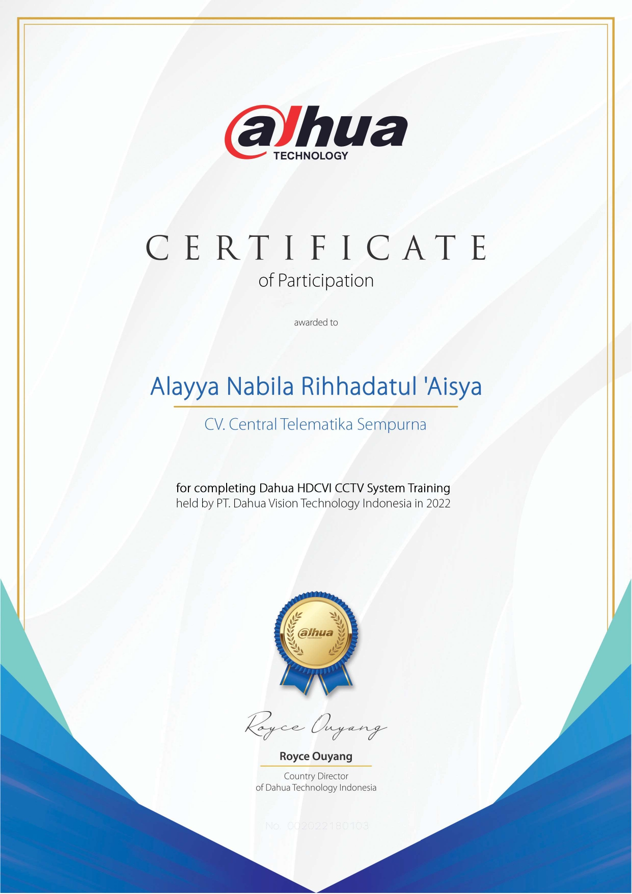
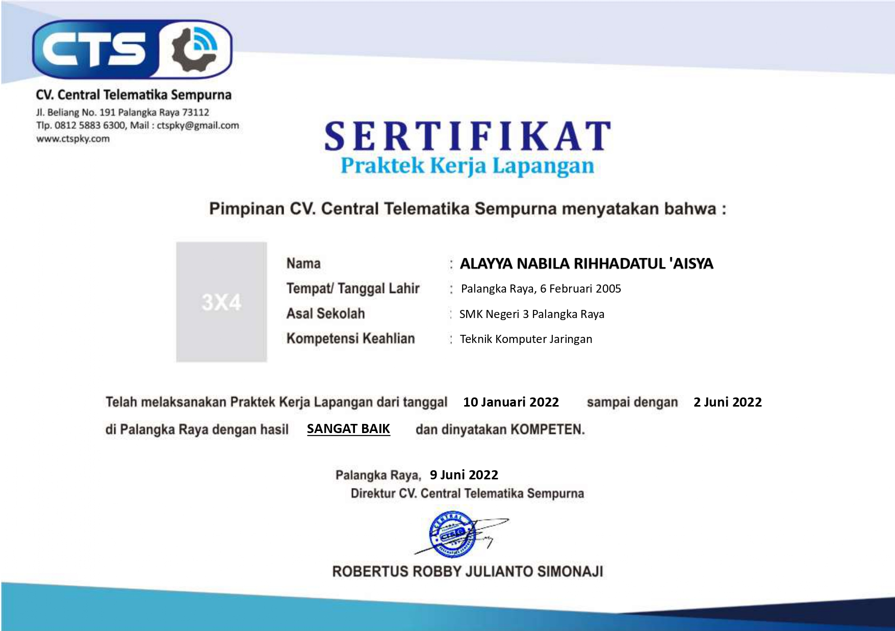

My Skills
Skill yang aku miliki adalah :
Aku bisa menari tarian tradisonal Dayak
Aku mampu menguasai lebih dari 2 bahasa, diantaranya yaitu Bahasa Indonesia, Bahasa Banjar, Bahasa Inggris, Bahasa Korea(belum terlalu fasih)
My Experience

